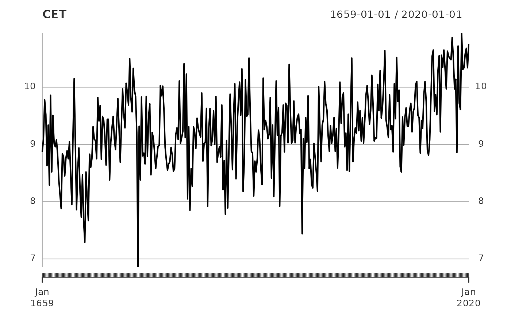

Central England Temperature
CET.RmdShi, et al. (2022) use
changepoint detection algorithms to analyze a time series of temperature
data from Central England. These data are available via CET
from tidychangepoint.
library(tidychangepoint)
plot(CET)
l <- log_gabin_population(CET)
trend_wn <- CET |>
segment(
method = "ga",
model_fn = fit_meanshift,
penalty_fn = BIC,
population = l,
popSize = 200,
maxiter = 10
)
#> method: ga
#> Seeding initial population with probability: 0.0162752602536624
changepoints(trend_wn)
#> x34 x42 x273 x331
#> 34 42 273 331
fitness(trend_wn)
#> BIC
#> 656.7946
tidy(trend_wn)
#> # A tibble: 5 × 9
#> region num_obs min max mean sd begin end param_mu
#> <chr> <int> <dbl> <dbl> <dbl> <dbl> <dbl> <dbl> <dbl>
#> 1 [0,34) 33 7.86 10.2 8.83 0.554 0 34 8.83
#> 2 [34,42) 8 7.29 8.83 8.03 0.531 34 42 8.03
#> 3 [42,273) 231 6.86 10.5 9.18 0.587 42 273 9.18
#> 4 [273,331) 58 8.52 10.6 9.53 0.454 273 331 9.53
#> 5 [331,362] 32 8.86 11.0 10.3 0.497 331 362 10.3
glance(trend_wn)
#> # A tibble: 1 × 9
#> pkg version algorithm params num_cpts model criteria fitness
#> <chr> <pckg_vrs> <chr> <list> <int> <chr> <chr> <dbl>
#> 1 ga 3.2.4 Genetic <named list [6]> 4 meanshi… BIC 657.
#> # ℹ 1 more variable: elapsed_time <drtn>
glance(trend_wn$model)
#> # A tibble: 1 × 11
#> pkg version algorithm params num_cpts rmse logLik AIC BIC MBIC MDL
#> <chr> <pckg_> <chr> <list> <int> <dbl> <dbl> <dbl> <dbl> <dbl> <dbl>
#> 1 tidych… 0.0.0.… meanshift <dbl> 4 0.553 -299. 618. 657. 658. 730.
plot(trend_wn, use_time_index = TRUE)
#> Scale for x is already present.
#> Adding another scale for x, which will replace the existing scale.